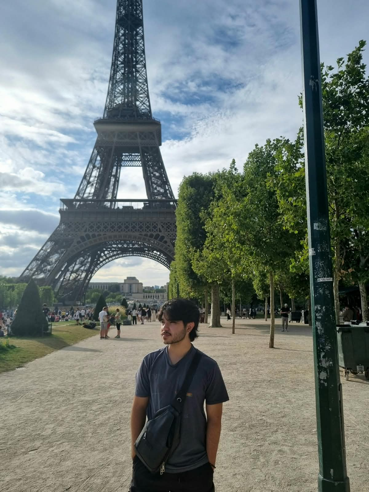

Um pouco sobre mim
Olá, eu sou Lucas Kitei!
Sou estudante de Sistemas de Informação pelo Instituto Federal de Educação, Ciência e Tecnologia de São Paulo
(IFSP), e estou aprendendo desenvolvimento Web pela primeira vez!
Tenho interesse por tecnologia, programação e desenvolvimento de sistemas.
Esse site foi criado como parte do meu aprendizado na matéria de Desenvolvimento Web.

Meus Hobbies/Interesses/Estudos
Além dos estudos e da faculdade, gosto de dedicar meu tempo a alguns hobbies que fazem parte do meu dia a dia. Como por exemplo, assistir filmes e séries, jogar, ler, ouvir música, ir treinar e programar e aprender coisas novas sobre tecnologia, principalmente quando posso colocar meus conhecimentos em prática criando pequenos projetos.
Meus contatos:
Email: lucas.kakinoana@gmail.com
Instagram:
Meu perfil no Instagram @lucaskitei
GitHub:
Meu perfil no GitHub lucaskitei